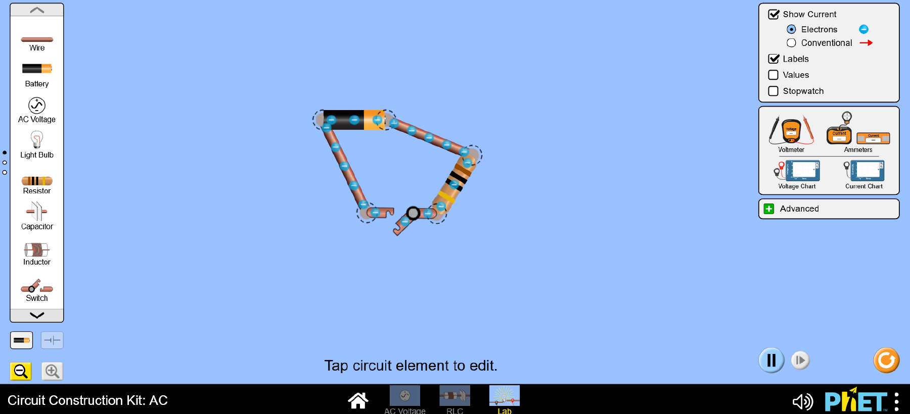

Chapter 6 Setting up your circuit
Start with a very simple circuit: - a battery, - two wires on either side of the battery, - one resistor connected to a wire - a switch to close off the circuit.
It should look roughly like the one shown in the image below.

Any time you want to break a contact between components, just click on the junction and then on the scissors that will appear.
You will use variations of this circuit to see Ohm’s law in action.
Throughout the exercises you will answer questions in the e-test on itslearning. We will indicate here when this is the case and which question it is.
Test question 1: Close the switch in your circuit.
In which direction do electrons move?
Test question 2:
In which direction does the current move, according to the conventional definition?
Hint: Electrons have a negative charge.
You can also verify your answer by selecting the ”conventional” current representation on the right hand side of the simulation page.
Test question 3:
Set the battery to 9V. Set the resistor to 10 Ohm. Use an ammeter to measure the current that flows in the circuit.
In the real world, ammeters must be connected in series with the circuit, but in the simulation it is enough to place it by the circuit.
First, position the ammeter between the battery and one of the wires. Read off the current.Second, place the ammmeter between the resistor and the switchand read off the current again.
Is the second value smaller, bigger or equal to the first value you obtain?
Test question 4:
Which value do you measure?
Test question 5:
Using Om’s law:
\(U = I R\)
Calculate the current you would expect.
What value do you calculate using Ohm’s law?
Test question 6:
Set the resistor to 50 Ohm and measure the current.
What current do you measure with a 50 Ohm resistor?
Is this consistent with Ohm’s law? Pay attention to how the electrons are moving now. Are they faster, slower or the same as before?